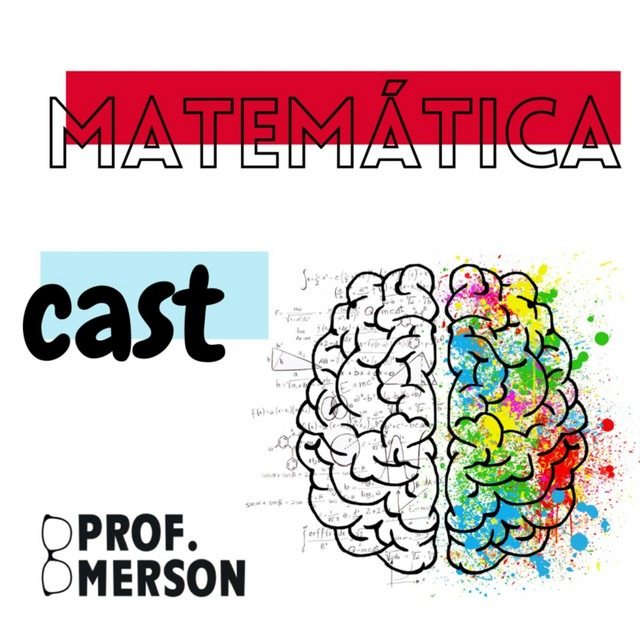

Matemática ENEM
Topo da páginaO Podcast é produzido pela Rede AZ, uma plataforma que auxilia muito para um alta performance acadêmica. Por meio de ferramentas inovadoras e com uma metodologia diferenciada, a AZ estimula a autonomia, o protagonismo e o gosto pelo estudo de cada aluno. Cada podcast apresenta uma média de 2 minutos, algo bem rápido que você pode ouvir enquanto vai para a escola ou durante qualquer outra atividade rotineira.
Matemática Cast
Topo da páginaPodcast produzido pelo professor Emerson Alexandre Nogueira Júnior, que de forma bem didática e interativa, ensina a matemática de uma forma diferenciada. Com episódios não muito longos, você consegue escutar a qualquer momento, sendo o aprendizado da matemática não restrito apenas ao papel!
UTF explica Matemática
Topo da páginaPodcast produzido pela UTF (Universidade Tecnológica Federal), para aqueles que gostam de uma explicação mais profunda da matemática, de uma forma leve e com várias dicas. O podcast visa ajudar aqueles alunos que buscam uma forma diferente de aprender a matemática, fugindo do tradicional que muitas vezes é visto como chato.